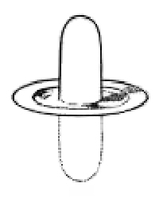
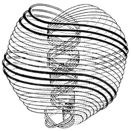
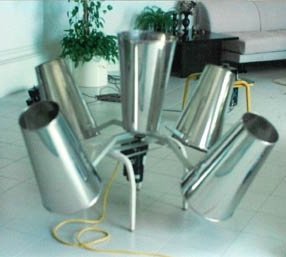
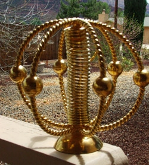
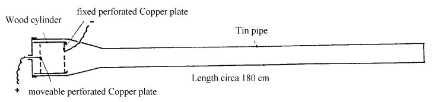
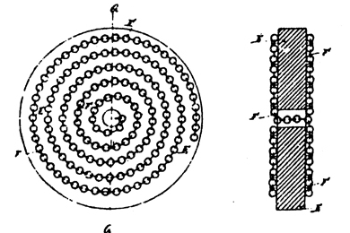
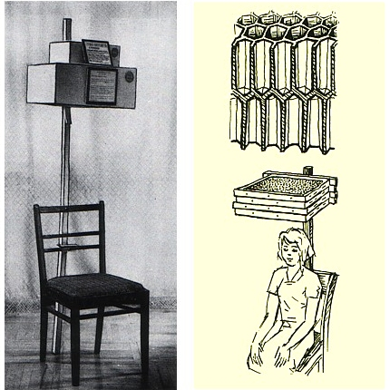
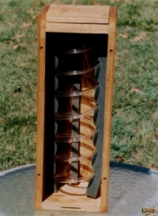
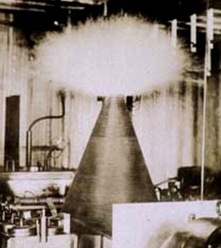

Ether research
The four ethers (theosophical, anthroposophical and rosicrucian writings)
Vitality globules, lifeforces and etheric atoms (theosophical writings)
Orgone energy discoveries of Wilhelm Reich (1897-1957)
Etheric weather discoveries of Trevor J. Constable
The Harmonizers of Slim Spurling (1938-2007)
The Ether Radiating Apparatuses of Oskar Korschelt (1853-1940)
The honeycombs of Viktor Grebennikov (1927-2001)
The quartz crystals of Marcel Vogel (1917-1991)
Thoughts about magnetism and orgone energy
Radiant energy discoveries of Nikola Tesla (1856-1943)
The first time I read about etheric forces was from theosophical book. According to Charles Leadbeater (1900) there are great etheric currents constantly sweeping over the surface of the Earth from pole to pole, and there are methods by which this force may be safely utilized, though unskillful attempts to control it would be of great danger. Secondly, there is etheric pressure, somewhat corresponding to the atmospheric pressure, and by isolating the ether from a given space, the tremendous force of etheric pressure can be brought into play. Thirdly, there is vast store of potential energy, and by changing the condition of the matter some of this may be liberated and utilized, somewhat as latent energy in form of heat may be liberated by a change of a condition of visible matter. (1)
The four ethers
According to Annie Besant (1910) there are different densities of etheric matter that are different as solid and liquid are different, and these yield what we call electricity, sound, light, and so on. The densest form of ether motion gives the ordinary current electricity and in that same kind of ether are the vibrations of sound, which set the air waves going (vibrations of air are secondary). Another density of ether gives the vibrations of light. Then there are fast and short waves which give the finer forms of electricity. There are also subtler forms of ether vibrations which are the medium for transmission of thoughts from brain to brain. (2, 3)
According to Pekka Ervast (1926) ether is invisible physical force. Firstly, there is chemical ether, which creates energy from the food. This ether manifests in warmth and fire. Secondly, there is magnetic ether, which is the creative force connected to sexual attraction. It is also connected to the production and the movement of the body fluids. Thirdly, there is sense/light ether, which is connected to physical senses. This ether flows in nerves and blood, and it is often called prana. And fourthly, there is the most evolved memory/life ether, which is connected to memory and breathing. Ervast also points out that prana is sometimes defined as the vital force of the Sun, which flows on all levels. (4, 5, 6)
To compare and expand the information, according to Rudolf Steiner and Guenther Wachsmuth (1932, as cited by Constable, 1990) there are four ethers. The warmth ether manifests in heat, which can be regarded as the fourth state of matter. It is expansive in action and tends to produce spherical forms. The light ether is perceived as the normal light. It is expansive in action and tends to produce triangular forms. The chemical ether is active in chemical processes of all kinds, and also transmits sound to human ear. It is the same as orgone energy. It is blue in color, centripetal in action and interlocked with all the phenomena of cold and contraction. The tones vibrating everywhere in space are produced by the forces of chemical ether. In the nature this ether tends to produce half moon forms. The life ether is the most evolved of the four ethers. It is centripetal in action and tends to produce square shapes. (7)
In these researches the ethers given by Ervast (1926) are kept as a guiding principle with following names:
1. The warmth ether is the densest of the four ethers and closely related to the fire element. Conventional electric current is one form of the warmth ether.
2. The magnetic ether is connected to the orgone energy (as sexual energy) and movement of fluids in nature. Photons and electromagnetic waves are also connected to the magnetic ether.
3. The light ether is connected to finer orgone energies such as vitality globules and lifeforces that flow along our nerves. Perhaps radiant energy (negative energy ~ dark energy) manifest in the light ether domain.
4. The life ether is the finest ether, and connected to the thoughts and memory of physical beings.
Update (February 14, 2011) According to Max Heindel (1909) there are four ethers. Firstly, the chemical ether is both positive (assimilation) and negative (excretion) in manifestation. Secondly, the life ether is the avenue for the forces of propagation to operate. It has positive and negative poles. The positive forces work in the female during gestation and the negative forces enable male to produce semen. Thirdly, the light ether is also polarized. The forces which work along the positive pole circulate blood (or plant sap) and generate blood heat. The negative forces operate through the senses, and deposit chlorophyll and colors. Fourthly, the reflecting ether records the reflections of the memory of nature. This ether is also the medium for thought to make an impression upon the brain. (24)
Vitality globules, lifeforces and etheric atoms

Fig. 1. Lifeforce & vitality
According to Leadbeater (1927) the Sun sends out several of forms of etheric energy, for example serpent fire, lifeforce and vitality. The lifeforce seems to be capable of occupying several different kinds of etheric form and most commonly it adopts an octahedron, made of four atoms* arranged in a square, and one central atom constantly vibrating up and down. Sometimes it uses exceedingly active little molecule consisting of three atoms. The vitality globule consists of seven atoms, arranged like the atoms in lifeforce, except in a form of hexagon instead of a square. In all of these forms the central atom is in rapid vibration at right angles to disc plane of other atoms, springing up from it to a height greater than the diameter of the disc, and then sinking below the disc to an equal distance, repeating this motion several times in a second. (8)

Fig. 2. Feminine etheric atom
*The term "atom" used here refers to etheric atoms. There are two kinds of etheric atoms, positive (masculine) and negative (feminine). In the positive atom the lifeforce flows (counterclockwise) from the fourth dimension to the physical world and in the negative atom the lifeforce flows (clockwise) from the physical world to the fourth dimension. The force flows in from the wider end, causing a heart like shape. It spirals within and around this atom in closed loops. The atom is spinning upon its own axis and it has a regular pulsation, a contraction and expansion, like the pulsation of the heart. (9)
The Sun radiates vitality to all levels. The vital force enters some of the physical atoms, immensely increases their activity and makes them animated and glowing. When vitality wells up within atom, it endows it with an additional life, and gives it a power of attraction so that it immediately draws around it six other atoms which it arranges in a hexagonal form. These globules are conspicuous above all others which may be seen floating in the atmosphere, on account of their brilliance and extreme activity. While the force that vivifies these globules is quite different from light, it nevertheless seems to depend upon light for its power of manifestation. In brilliant sunshine this vitality is constantly welling up afresh, and the globules are generated with great rapidity and in incredible numbers, but in cloudy weather there is great diminution in the number of globules formed, and during the night, the operation is entirely suspended. (8)
Orgone energy discoveries of Wilhelm Reich (1897-1957)
The orgone energy is pulsating life energy and fundamental creative force in nature. It charges and radiates from all living and non-living substances. Different materials attract and absorb or reflect orgone energy. It is strongly attracted to living things, to water, and to itself. The orgone energy penetrates matter with various speeds. It is related to magnetism and electrostatic charges. (10)
Wilhelm Reich discovered orgone energy through bion (pulsating microscopic vesicles) experiments. One bion preparation made from pulverized beach sand heated to incandescence and immersed into a sterile nutrient broth, yielded powerful radiant energy phenomena. Lab workers developed eye and skin inflammation, when they observed the preparation for too long or too close. The energy conveyed magnetic field to nearby iron instruments, and electrostatic charge to nearby insulators. Reich noted that metals attracted this energy and quickly reflected it to both directions. Organic materials attracted, absorbed and held on this energy. (10)
From these observations, Reich (1940) developed a way to concentrate orgone energy. He constructed small boxes with alternating layers of organic and metallic materials, with the innermost layer being metal. Reich called his device the orgone energy accumulator. (11)
Good organic materials for orgone accumulators are wool, beeswax, fiberglass and acrylic plastic. Good metals are iron and steel sheets, steel wool and tinplate. Accumulators used on living systems, copper and aluminum should be avoided as they yield toxic effects. The accumulation becomes more powerful as more layers are added, although after three (organic+metal) ply's the strength grows only a little: A three ply accumulator has about 70 % of the strength of a ten ply accumulator. (10)
Orgone accumulators have many interesting effects. On sunnuy clear days an accumulator develops a slightly higher temperature to its inside than either its surroundings or a control enclosure. An electroscope kept inside an orgone accumulator will dissipate its charge more slowly, and sometimes it spontaneously charges up. An accumulator tends to attract slightly higher humidity into itself. In rainy weather all of the above effects disappear. Geiger Muller tube placed inside a strong accumulator for several weeks or months goes dead for a period, and later charges up to very high ionization levels. (10) This vacuum tube ionization effect might be part of the secret behind Reich's orgone motor.
Accumulator amplifies the energy conditions of the local environment. Orgone energy is sensitive to electromagnetic excitation, and it is irritated to over-excited, unhealthy state by radioactive materials, x-ray generators, radars, microwave ovens, cellular towers, broadcast towers, cathode ray tubes (old TVs), fluorescent lamps and high voltage power lines. Reich called this phenomenon the oranur effect. The over-excited state can persist after the devices are removed. When the irritation is prolonged the orgone energy becomes stagnant and lifeless, deadly orgone energy (dor). The air charged with dor is stuffy and it is hard to get a good breath out of it. (10)
Normally orgone energy is in sparkling and pulsing condition. On fair weather breathing is easy and most people feel exceptionally alive and relaxed. On sunny clear days the orgone charge at the Earth's surface is strong, and on rainy weather the orgone charge is weak at the surface, but strong at the atmosphere. Orgone charge tends to be stronger at higher altitudes than at lower altitudes, and also stronger at lower latitudes than higher latitudes. (10) However, this isn't always the case. For example Scandinavian spring and summer may have a stronger orgone charge than rest of the Europe. It could be one of the reasons why birds migrate to breed in Scandinavia.
Etheric weather discoveries of Trevor J. Constable
The Earth is a living organism, and like all living things it breathes. The major etheric force involved in the breathing processes is the chemical ether. The planet Earth exhales the chemical ether into the atmosphere at sunrise, and inhales it into the mantle at sunset. "The moisture-producing, fluid-influencing chemical ether is responsible for such seemingly disparate phenomena as morning and evening fogs and mist, fluctuations in soil humidity, barometric pressure changes, increases and diminutions of potential gradient, and the rising and falling of plant sap." (7)
Wilhelm Reich (1897-1957) discovered the chemical ether as a physical force in 1939-1940, and called it orgone energy. He empirically found out many properties of orgone energy; the blue color, affinity to the fluid state of matter and the ability to produce thermic, barometric, electrostatic and biological effects. In his discovery of the atmospheric orgone energy, Reich also determined the presence of its basic west to east movement. (7)
The chemical ether flows from low potential to high potential - to the opposite direction than conventional energy potentials. The main etheric flows in the temperate zones run from west to east, and in the equator, the main flow is from east to west. There are large differences in temperate zone etheric densities and response times compared to (faster) equator. The west to east flow of ether in the northern hemisphere is strongest at full moon, and weakest at new moon. There is also south to north terrestrial flow of ether in the northern hemisphere spring and summer, and in the winter this flow reverses. The west to east flow and the south to north flow are separate functions of the ether, but to some degree they mutually influence each other. (12)

Fig. 3. Etheric weather engineering device
Geometric forms and structures have a long history of involvement with etheric force. Pyramids and cones focus etheric force in a coherent beam from the cone apex. When rotation is added, the devices become more effective as vortical movement is generated in the ether. Additionally when the devices are mounted on a moving vessel, their action is greatly enhanced. In the picture is Mark 5 Spider: The rotating cones induce vortical movement into the ether, which increase the local etheric potential and attract atmospheric moisture, and eventually produce rain. (12)
Etheric potential and barometric pressure have an inverse relationship. As etheric potential and humidity rises, barometric pressure goes down, clouds are formed and eventually it rains. When the etheric potential becomes sufficient, it discharges via lightning. High etheric potentials are antagonists to high electric potentials. Very high etheric potential (for example in tropical cyclones and in tornadoes) flows towards high electric potential sources such as high voltage transformers and breaks them with great force. (12, 13) This is very interesting, as there might be some useful ways to use this antagonism.
There are two kids of etheric vortices: implosive and explosive. Conventional technology depends upon explosive forces, which are hot, dry, and destructive. Implosive forces, on the other hand, are cooling, contractive, and constructive to life. Their activity is harmoniously ordered and based on the golden section ratios, which manifest in all life. (12)
The Harmonizers of Slim Spurling (1938-2007)

Fig. 4. Environmental harmonizer
Experiments with caduceus coils led Spurling in 1991 to discover the healing effects of specific length copper rings. When a copper ring is resonant with harmonic frequencies of light, it creates a tensor field inside the ring, which emits bluish white light. The ring also creates a coherent energy beam at a right angles to the tensor plane. Additionally when the copper ring is twisted left handed helix (counterclockwise), the ring has positive effects on both sides. The harmonizer in the picture consists three of these rings intersecting at 120 degrees, consequently creating a toroidal field. When certain sound frequencies are applied, this field expands. The coil in the center directs the flow of energy and induces rotation to the spherical toroid. The beads amplify the effect like spherical capacitors. (14)
Spurling's harmonizers are capable of reducing air pollution and clear air at least ten miles radius, especially when resonant frequencies of the water molecules in a cloud are played to the harmonizer. The rings alone have positive effect on biological systems and water, and they can reduce storms and lightning. It appears that Spurling's tools function in resonance with standing gravitational wave of the universe. (14)
It is obvious that Spurling's tools are connected to the magnetic ether, as their energy field emits bluish light, influences water, and reduce storms and lightning. In addition, they may be connected to the finer ethers.
The Ether Radiating Apparatuses of Oskar Korschelt (1853-1940)
In April 1890 Korschelt constructed healing ray device from a special kind of pipe. He believed that the Sun emits small ether particles and by appropriate antennas it should be possible to use these particles for healing purposes. (15)
His first device was comprised of two circular copper plates (13 cm in diameter) with regular grid of square holes (10 mm in diameter). The copper plates were positioned inside cylindrical wooden ring (12 cm in length) to the opposite ends. The wooden ring was positioned in a tin can, which was open on the one end and soldered to a truncated cone followed by 1.5 meters long tube. The copper plate on the tin cans back end was connected through the lid to positive terminal of the battery and the copper plate on the beaming end was connected to negative terminal. The copper plate connected to the positive plate was moveable inside the wooden cylinder. (15)

Fig. 5. Etheric healing ray apparatus
Korschelt discovered that the effects were considerably reinforced when both of the copper plates were connected to battery terminals. If only one copper plate was connected, the effect was sensed only weakly. The treatments lasted from few minutes up to 30 minutes. The distance of the plates was adjusted to less than 6 cm for non sensitive people. Calm persons felt better with longer distances. There was an individually harmonious distance for each person. The ether radiation influenced not only people; after 15 minutes it fulfilled the entire room. (15)
The power supply played a role on the effects, although the apparatus worked also without electricity, albeit not so strongly. The ether radiation worked harmoniously with coal, silver and gold electrodes, but rejected current out of dynamo. If the current was lead trough glass of fresh water, the results improved. Suitable metals for the apparatus proved to be gold, silver, copper, nickel, iron, zinc, tin, and its alloys. Lead was recognized as unsuitable. The radiation was influenced by the weather; only in the fair weather success were obtained. (15)

Fig. 6. Ether ray disc
The ray apparatus described above was large and impractical in the handling. Consequently Korschelt developed a smaller ray disc (German patent 69340, July 14, 1891). The ray disc was handy, but not particularly strong. It was a wooden disc with a hole in its centre. On both sides spirals of copper chain were fastened, on the front clockwise spiral facing the Sun and on the back counterclockwise spiral facing the patient. The clockwise spiral collects the ether particles and the counterclockwise spiral radiates them like a beam. The spirals were connected to each other through the hole. To increase the power of the device, a heavy gauge antenna wire was lengthened by twisting two copper wires helically (like caduceus), separating and cutting every fourth twist, shaping them like rings and soldering them together like a chain. (15, 16)
The effects from these ray apparatus were perceived by healthy people as cold and others as warmth, some sweat a lot, although the body temperature remains normal. As a rule, the effects were calming. The heart activity becomes stronger and slower. The sleep becomes deeper and therefore less sleep is required. The memory becomes better. The apparatuses were especially suitable for healing stomach problems, nerve diseases, insomnia and pains. (15)
The honeycombs of Viktor Grebennikov (1927-2001)

Fig. 7. Honeycomb pain reliever
The Agroecology Museum near Novosibirsk displays an always active honeycomb pain reliever. It is a chair with overhead cap that has few dry honeycombs in it. Anyone who sits in the chair will after a few minutes almost certainly feel something, and those with a headache will get relief for the pain at least for a few hours. The honeycomb pain relievers, discovered by Grebennikov, are successfully used in many parts of the Russia. (17)
In the old days headaches and concussion symptoms were treated with an ordinary flour sieve that was held above the head of the patient. The device works better when it is aligned towards the Sun (north at midnight). (17)
Both of the pain relievers work due to the cavity structural effect. Korschelt's ether apparatuses also work on the same effect, and additionally they work on orgone energy. It seems that the cavity structural effect is different phenomena than orgone energy, although there is some form of relationship between these two. The shape of the cavity influences orgone energy by directing it.
The quartz crystals of Marcel Vogel (1917-1991)
Fig. 8. Vogel cut healing crystal
A natural quartz crystal has the capacity for information storage, amplification, and transfer, but it is unable to cohere that energy. When the crystal is cut in the dipyramidal shape indentified as Vogel-cut, it is tuned to be a coherent information transfer device. The geometry of such crystal creates a coherent field of energy that can act as a carrier wave of information. The crystal is able to transmit energy in a form that has discreet biological effects, which are most likely resonant effects. The intelligence matrix of quartz crystals can be interacted and enlivened with mind energy and pulsed breath. (18, 19)
When Vogel was growing liquid crystals in IBM laboratory, he witnessed and photographed the precipitation of light into crystal. Just before the crystal melt transcended into the liquid crystal state, a flash of blue light took place. This flash contained information in a geometric form, which was the source of the crystallographic form from which the crystal developed. (19) This phenomena may indicate that the crystal growth is influenced by magnetic ether. Other known sources of blue flashes include excited air molecules; when electrons in air molecules move back to lower energy levels photons of blue light are emitted.
When the relationship between water and quartz crystals was researched, it was found out that by circulating water around Vogel crystals many structural changes occur in the water. The water could be programmed with specific information depending upon the nature of the information programmed into the crystal. For example the crystal can be programmed with the intent of unconditional love. Although there is measurable magnetic field present, it is only an effect of something more fundamental in nature than electromagnetic fields. However, the fields present in both the crystal and liquid when charged can be cleared by a bulk demagnetizer. (19)

Fig. 9. Pyrex glass coil
In most cases it was found that water generated a weak magnetic field and on one occasion a different effect was noted. Normally the effects were attained by circulating water trough a Pyrex glass tube coiled seven clockwise turns around charged Vogel-cut crystal. By reversing the position of the crystal so that the more acute tip (which emits the coherent field) was pointed upwards, a powerful energy was released. The released energy had expanding force wave and burning radiation effects on Vogel. (19)
There is still another example of the crystals capability to release energy. Vogel created a circuit with one of his crystals as a power source. He put the crystal in the middle of the hexagonal wooden box and then made a copper coil and a silver-tin coil wrapped 250 times. He also had a nickel coil on the outside. Primary and secondary wires came out to a voltmeter. Then he breathed in and pulsed the breath, and out came the voltage from the crystal up to 75 VDC. With light bulb in the place of the voltmeter, Vogel was able to illuminate the bulb. (19)
Thoughts about magnetism and orgone energy
There is only a little information how magnetism and orgone energy are related. One source suggests that orgone energy acts on the same plane as magnetism but in the opposite direction, and perpendicularly to the electric field. (20) According to another source, orgone energy moves in the direction of a magnetic field, and at right angles to an electrical field. (21)
In current hypothesis, the magnetic field is created by vortical motion of ether. As its changing produces electric current by induction, the magnetic field is connected to the warmth ether. Like electricity, magnetism has finer forms. The finer forms of magnetism produce the well known biological effects of the magnetic poles. In the finer ethers geomagnetic North Pole (South Pole in electrical theory) is cooling - centripetal in nature, and geomagnetic South Pole (North Pole in electrical theory) is warming - centrifugal in nature. Therefore, it is suggested that orgone energy tend to flow towards the geomagnetic North.
Update (October 12, 2010) According to Kanjski & Zujic (2008) any stable magnet has its own orgone field, in which orgone energy flows along the magnetic lines towards the geomagnetic North. Orgone energy has also the tendency to move in a spiral fashion towards the right like a snail shell (Fibonacci spiral), from a lower energy level to a higher energy level. (22)
There is some information about the finer forms of magnetism, namely individual magnetism. The prana which courses along the nerves is quite separate and distinct from what is called individual magnetism or nerve-fluid, which is generated within the body. The individual vital fluid keeps the etheric matter circulating along the nerves or more accurately, along a coating of ether which surrounds each nerve. This individual magnetism may be employed for mesmerizing or healing others and also for magnetization of objects. Any object, which has been in contact with an individual, will absorb that individual's magnetism. (3)
The individual magnetism seems to be related to the magnetic ether and orgone energy. Therefore it is suggested that orgone energy has some kind of memory. Further, materials orgone receptivity and memory/capacitance characteristics are related to specific spectrum of orgone pulsations. Some materials are very receptive to life enhancing orgone pulsations, such as water and quartz. And some materials are receptive to wider orgone spectrum than others, for example water and air are very receptive to both negative and positive pulsations, whereas gold and silver are less receptive to negative pulsations (See 3). In this relation at least quartz crystals are unique, since they can be mentally programmed to hold only positive pulsations (See 19).
September 7, 2010
Radiant energy discoveries of Nikola Tesla (1856-1943)
In 1889 Tesla observed by a change a radiant effect associated with high voltage discharges. By experimenting he discovered that the radiant effect could not be shielded. When he searched the literature he found out two observations associated with similar spark discharges: Joseph Henry (1842) observed magnetization effect through natural barriers, and Elihu Thomson (1872) observed spark color change from blue to white and distant charging phenomena. Through visionary experiments Tesla discovered several conditions to produce this effect. The radiant effect manifested only at the very instant of switch closure and it was related to the impulse time. Unidirectional impulses were essential. The effect was strengthened by placing a capacitor between the disrupter and the dynamo. The capacitor also protected the dynamo windings. The effect could be intensified by raising the voltage and the pulse rate, and shortening the actual time of switch closure. (23)

Fig. 10. Tesla's conical coil in 1895
Tesla discovered that the radiant energy has a spectrum of light-like energies, where the impulse duration defined the effect of each narrow spectrum. Trains of impulses each exceeding duration of 100 microseconds produced painful radiant shocks and mechanical vibration and movement of objects. These effects disappeared when impulses of 100 microseconds or less were produced. With impulses of 1 microsecond duration, strong physiological heat was sensed. Shorter impulse duration brought spontaneous illuminations capable of filling rooms and globe lamps with white light. These short impulses (about 0.1 microseconds) produced also room penetrating cool breezes, with accompanying uplift in mood and awareness. (23)
The radiant field is composed of longitudinal waves, which are like soundwaves of electrified air. It resembles an electrostatic or dielectric field, were current and magnetic field are negligible. The radiant (ether) particles are much smaller than electrons and neutral in charge. They are nearly massless and move with superluminal velocity. The radiant energy behaves similarly to an incompressible gas under pressure. It flows along the conductor surfaces and leaves wires and other circuit components perpendicular to the flow of current. (23)
Tesla saw that electrical current was really a complex combination of aether and electrons that can be separated from each other. Gaseous etheric energy can be fractionated away from the flow of electrons in a circuit designed to produce short duration, unidirectional impulses. The radiant event produces a voltage that can be thousands of times greater than the initial spark discharge voltage. It also generates build up of electrical charges on metal surfaces. The radiant effects are accumulative and they grow stronger in time because there are no reversals in the source discharges. The radiant effect is the foundation of Tesla's claim that his magnifying transmitter was capable of producing more energy out than he was putting in. Today, this concept is referred as free energy. (23)
References
(1) Leadbeater, Charles W. 1900. The Astral Plane. Retrieved August 26, 2010, from http://www.spiritwritings.com/leadbeaterastral.pdf
(2) Besant, Annie 1910. Popular Lectures on Theosophy. The Ladder of Lives. Chicago: The Rajput Press. Retrieved September 6, 2010, from http://www.archive.org/stream/cu31924029168247#page/n21/mode/2up
(3) Powell, Arthur E. 1996. The Etheric Body (6th edition). United States of America: Theosophical Publishing House.
(4) Ervast, Pekka. 1926-1927. "Presentations of the development of the etheric body". Retrieved August 26, 2010, from http://www.pekkaervast.net/teokset/Eetteriruumis.pdf
(5) Ervast, Pekka. 1932. "Etheric body 1" presentation. Retrieved August 26, 2010, from http://www.pekkaervast.net/artikkelit/Esitelmat/1932%2003%2019%20Eetteriruumis%201.pdf
(6) Ervast, Pekka. 1932. "Etheric body 2" presentation. Retrieved August 27, 2010, from http://www.pekkaervast.net/artikkelit/Esitelmat/1932%2003%2020%20Eetteriruumis%202.pdf
(7) Constable, Trevor J. 1990. Cosmic Blueprint from The Cosmic Pulse of Life. Retrieved August 27, 2010, from http://www.borderlands.com/cosmicpulseoflife.html
(8) Leadbeater, Charles W. 1927. The Chakras. Retrieved August 27, 2010, from http://www.scribd.com/doc/36280061/4634287-C-W-Lead-Beater-Chakras
(9) Leadbeater, Charles W. & Besant, Annie. 1951 (3rd edition). Occult chemistry. Retrieved August 29, 2010, from http://www.subtleenergies.com/ormus/oc/ocindex.htm
(10) DeMeo, James. 1999. The Orgone Accumulator Handbook (2nd edition). United States of America: Natural Energy Works. Retrieved September 1, 2010, from http://www.themeasuringsystemofthegods.com/orgon.pdf
(11) The Wilhelm Reich Museum. 2006. Biography. Retrieved September 1, 2010, from http://www.wilhelmreichmuseum.org/biography.html
(12) Constable, Trevor J. 1990. Etheric Rain Engineering. Retrieved August 27, 2010, from http://www.stumbleupon.com/su/8v2vzW/www.rainengineering.com/
(13) Constable, Trevor J. 2003. High etheric potential vs. high voltage electricity. Retrieved August 30, 2010, from http://www.rainengineering.com/ether/ether_electricity.html
(14) Garrison, Cal. 2004. Slim Spurling's Universe. United States of America: IX-EL Publishing LLC.
(15) Sauer, Holger. 2004. "Orgone Pioneer Oskar Korschelt". Retrieved August 31, 2010 from http://www.paranormalebilder.de/korschelt.htm
(16) Zock, Albert. Sun-Ether Disc. Retrieved August 31, 2010 from http://multiplewaveoscillator.com/ether_radiating_apparatus.html
(17) Keelynet. 2001. The Natural Phenomena of AntiGravitation and Invisibility in Insects due to the Grebennikov Cavity Structure Effect (CSE). Retrieved September 2, 2010, from http://keelynet.com/greb/greb.htm
(18) Da, Rumi. (Carson, Ron). Creating a Quantum Converter. Retrieved September 7, 2010, from http://www.vogelcrystals.net/creating_a_quantum_converter.htm
(19) Da, Rumi. 1996. The Legacy of Marcel Vogel. Retrieved September 7, 2010, from http://www.vogelcrystals.net/legacy_of_marcel_vogel.htm
(20) Unknown author. 2005. 50 Years after Albert Einstein: The Failure of the Unified Field. Canada: Akronos Publishing. Retrieved September 3, 2010, from http://www.aetherometry.com/Electronic_Publications/Politics_of_Science/Unified_Field/uft_faraday.html
(21) Schiffer, Alex A. 1999. Experimenter's Guide to the Joe Cell. Australia: NuTech 2000.
(22) Kanjski, Vilim & Zujic, Hrvoje. 2008. The Secrets of the Pyramids Revealed. Retrieved October 12, 2010, from http://www.scribd.com/doc/36460646/13029879-the-Secrets-of-the-Pyramids-Revealed
(23) Lindemann, Peter A. 2000. The Free Energy Secrets of Cold Electricity. United States of America: Clear Tech Inc.
(24) Heindel, Max. 1909. The Rosicrucian Cosmo-Conception. Retrieved February 14, 2011, from http://www.rosicrucian.com/rcc/rcceng01.htm#part2
Figures
1. Leadbeater, Charles W. 1927. The Chakras. Retrieved August 27, 2010, from http://www.scribd.com/doc/36280061/4634287-C-W-Lead-Beater-Chakras
2. Leadbeater, Charles W. & Besant, Annie. 1951 (3rd edition). Occult chemistry. Retrieved August 29, 2010, from http://www.alliancesforhumanity.com/matter/matter.htm
3. Constable, Trevor J. 1990. Etheric Rain Engineering. Retrieved August 27, 2010, from http://www.stumbleupon.com/su/8v2vzW/www.rainengineering.com/
4. Ma'at Shop. Retrieved August 30, 2010, from http://www.spiritofmaat.com/maatshop/sp_stormchaser_info.htm
5. Sauer, Holger. 2004. "Orgone Pioneer Oskar Korschelt". Retrieved August 31, 2010 from http://www.paranormalebilder.de/korschelt.htm
6. Zock, Albert. Sun-Ether Disc. Retrieved August 31, 2010 from http://multiplewaveoscillator.com/ether_radiating_apparatus.html
7. Keelynet. 2001. The Natural Phenomena of AntiGravitation and Invisibility in Insects due to the Grebennikov Cavity Structure Effect (CSE). Retrieved September 2, 2010, from http://keelynet.com/greb/greb.htm
8. Points of Light. Retrieved September 7, 2010 from http://www.bigquartz.com/images/T/vgdt%239.jpg
9. Vogelcrystals. net. Retrieved September 7, 2010, from http://www.vogelcrystals.net/winerybx.jpg
10. Wadsworth Sales Incorporated. Amateur Radio ~ Ham radio. Retrieved October 6, 2010, from http://wadsworthsales.com/hamradio.aspx